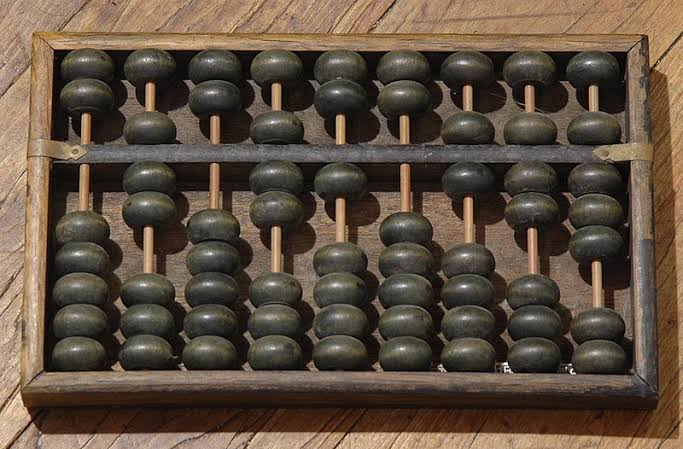
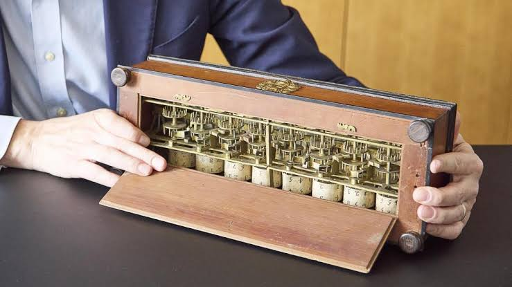
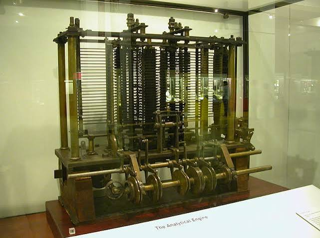

Los primeros inventos de la informática
Antes de que existieran las computadoras modernas, las personas crearon diferentes herramientas para facilitar los cálculos y resolver problemas matemáticos. Estos inventos fueron muy importantes para el desarrollo de la informática.
El ábaco

El ábaco es uno de los instrumentos de cálculo más antiguos
que se conocen. Está formado por varillas y pequeñas piezas
que se pueden mover para representar diferentes cantidades.
Se utilizaba principalmente para realizar operaciones
matemáticas como sumas, restas, multiplicaciones y divisiones.
Aunque no era una computadora, fue un antecedente importante
de las herramientas utilizadas para procesar información.
La Pascalina

La Pascalina fue una máquina mecánica creada por Blaise Pascal
durante el siglo XVII. Su objetivo principal era ayudar a
realizar cálculos matemáticos.
Funcionaba mediante ruedas y engranajes. Fue uno de los
primeros dispositivos capaces de realizar cálculos de manera
mecánica y automática.
La Máquina Analítica

En el siglo XIX, Charles Babbage diseñó la Máquina Analítica.
Aunque nunca llegó a construirse completamente, su diseño
tenía muchas características similares a las computadoras.
La máquina podía utilizar instrucciones y almacenar datos.
Por esta razón, Charles Babbage es considerado uno de los
principales precursores de la informática.
Ada Lovelace
Ada Lovelace trabajó con las ideas de Charles Babbage y
escribió instrucciones para la Máquina Analítica.
Por sus aportes, es considerada por muchas personas como
una de las primeras programadoras de la historia.